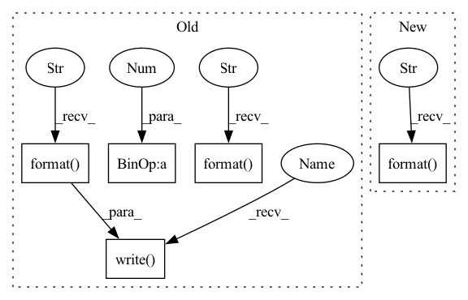

Pattern ID :42130

Before Change
f.write("\n\n")
f.write("\t".join(["Epoch", "Split", "ELBO", "Error", "KL"]) + "\n")
for i in range(3*(epoch+1)):
if i > 0 and (i%3 == 0):
f.write("\n")
f.write(train_log[i] + "\n")
f.write("Encoder model: \n {}".format(encoder_model))
f.write("\nGenerator model: \n {}".format(generator_model))
if __name__ == "__main__":
main()
After Change
print("\n\nargs:", file=log_file)
print(str(args), file=log_file)
print("\nEncoder model: \n {}".format(encoder_model), file=log_file)
print("\nGenerator model: \n {}".format(generator_model), file=log_file)
print("\n\n", file=log_file)
print("\t".join(["Epoch", "Split", "ELBO", "Error", "KL"]) + "\n", file=log_file)
In pattern: SUPERPATTERN
Frequency: 4
Non-data size: 5
Instances
Fragment ID: 118283396
Project Name: smlc-nysbc/target-vae
Commit Name: 293dd86fa319159b69cfd478120340daa759625e
Time: 2022-11-11
Author: alireza.nasiry@gmail.com
File Name: train_galaxy.py
M Class Name: AnonimousClass
N Class Name: AnonimousClass
M Method Name: main(0)
N Method Name: main(0)
M Parent Class:
N Parent Class:
M File Name: train_galaxy.py
N File Name: train_galaxy.py
M Start Line: 401
M End Line: 648
N Start Line: 444
N End Line: 648
'>
Before Change
desc = "| epoch {:03d}".format(epoch)
lr = trainer.get_lr()
with progress_bar(itr, desc, leave=False) as t:
for i, sample in data.skip_group_enumerator(t, num_gpus, batch_offset):
loss_dict = trainer.train_step(sample)
loss = loss_dict["loss"]
del loss_dict["loss"] // don"t include in extra_meters or extra_postfix
ntokens = sum(s["ntokens"] for s in sample)
nsentences = sum(s["src_tokens"].size(0) for s in sample)
loss_meter.update(loss, nsentences if args.sentence_avg else ntokens)
bsz_meter.update(nsentences)
wpb_meter.update(ntokens)
wps_meter.update(ntokens)
clip_meter.update(1 if loss_dict["gnorm"] > args.clip_norm else 0)
extra_postfix = []
for k, v in loss_dict.items():
extra_meters[k].update(v)
extra_postfix.append((k, "{:.4f}".format(extra_meters[k].avg)))
t.set_postfix(collections.OrderedDict([
("loss", "{:.2f} ({:.2f})".format(loss, loss_meter.avg)),
("wps", "{:5d}".format(round(wps_meter.avg))),
("wpb", "{:5d}".format(round(wpb_meter.avg))),
("bsz", "{:5d}".format(round(bsz_meter.avg))),
("lr", lr),
("clip", "{:3.0f}%".format(clip_meter.avg * 100)),
] + extra_postfix), refresh=False)
if i == 0:
// ignore the first mini-batch in words-per-second calculation
wps_meter.reset()
if args.save_interval > 0 and (i + 1) % args.save_interval == 0:
save_checkpoint(trainer, args, epoch, i + 1)
fmt = desc + " | train loss {:2.2f} | train ppl {:3.2f}".format(
loss_meter.avg, get_perplexity(loss_meter.avg))
fmt += " | s/checkpoint {:7d} | words/s {:6d} | words/batch {:6d}".format(
round(wps_meter.elapsed_time), round(wps_meter.avg), round(wpb_meter.avg))
fmt += " | bsz {:5d} | lr {:0.6f} | clip {:3.0f}%".format(
round(bsz_meter.avg), lr, clip_meter.avg * 100)
fmt += "".join(
" | {} {:.4f}".format(k, meter.avg)
for k, meter in extra_meters.items()
)
t.write(fmt)
def save_checkpoint(trainer, args, epoch, batch_offset, val_loss):
extra_state = {
After Change
("wpb", round(wpb_meter.avg)),
("bsz", round(bsz_meter.avg)),
("lr", lr),
("clip", "{:.0%}".format(clip_meter.avg)),
] + extra_postfix))
if i == 0:
'>
Fragment ID: 118283357
Project Name: mohammadkhalifa/fairseq-tagging
Commit Name: c6d6256ba52387066a47ce61da234e6a6a7d319c
Time: 2017-11-11
Author: myleott@fb.com
File Name: train.py
M Class Name: AnonimousClass
N Class Name: AnonimousClass
M Method Name: train(7)
N Method Name: train(7)
M Parent Class:
N Parent Class:
M File Name: train.py
N File Name: train.py
M Start Line: 139
M End Line: 200
N Start Line: 137
N End Line: 199
'>
Before Change
generator_model.to(device)
encoder_model.to(device)
with open(path_prefix + "train_log.txt", "w") as f:
f.write(experiment_description + "\n")
f.write("\n\nargs:")
f.write(str(args))
f.write("\n\n")
f.write("\t".join(["Epoch", "Split", "ELBO", "Error", "KL"]) + "\n")
for i in range(3*(epoch+1)):
if i > 0 and (i%3 == 0):
f.write("\n")
f.write(train_log[i] + "\n")
f.write("Encoder model: \n {}".format(encoder_model))
f.write("\nGenerator model: \n {}".format(generator_model))
if __name__ == "__main__":
After Change
print(experiment_description + "\n", file=log_file)
print("\n\nargs:", file=log_file)
print(str(args), file=log_file)
print("\nEncoder model: \n {}".format(encoder_model), file=log_file)
print("\nGenerator model: \n {}".format(generator_model), file=log_file)
print("\n\n", file=log_file)
'>
Fragment ID: 118283397
Project Name: smlc-nysbc/target-vae
Commit Name: 3ca9ef4e11fdd982ae05f11d98fcbf4ac6def1e7
Time: 2022-11-11
Author: alireza.nasiry@gmail.com
File Name: train_mnist.py
M Class Name: AnonimousClass
N Class Name: AnonimousClass
M Method Name: main(0)
N Method Name: main(0)
M Parent Class:
N Parent Class:
M File Name: train_mnist.py
N File Name: train_mnist.py
M Start Line: 404
M End Line: 692
N Start Line: 472
N End Line: 693